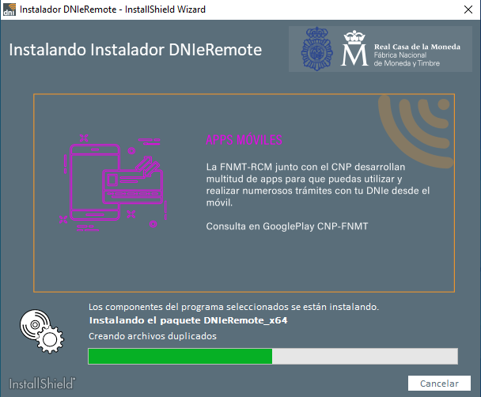
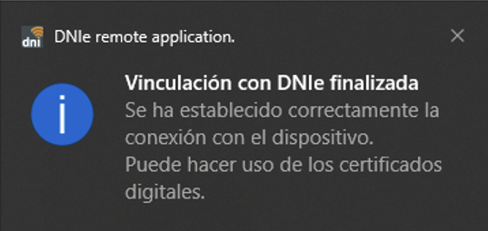

4.2 Uso de NFC con el DNIe
1. Introducción
Los requitos para el uso de NFC con el DNIe son:
-
DNI electrónico.
-
Lector de DNI: necesitamos un lector especifico para DNI Electrónico o, como en el ejemplo que veremos a continuación, el lector de DNIe remoto con un móvil NFC.
-
Software para Android DNIeSmartConnect con el que vamos a conectar con el PC y vamos a leer vía NFC el DNIe.
-
Software para Windows DNIeRemote con el que conectamos con el móvil.
2. DNIeRemote
Para utilizar DNIeRemote hay que descargar el paquete de instalación desde este enlace ya sea para Windows o Linux en las arquitectura de 32 o 64 bits:
Figura 1. Descarga de DNIeRemote para Windows 64 bits.
Una vez descargado el archivo, procedemos a instalarlo en el equipo.

Figura 2. Proceso de instalación de DNIeRemote para Windows 64 bits.
2.1 Conexión del DNIe
Para conectarnos, hay que ejecutar el software DNIeRemote (una vez se haya instalado). Aparece en la barra de tareas el icono de DNI en el que si pulsamos, muestra el siguiente menú. Se puede hacer vía USB o por WiFi que es como lo usaremos.
Figura 3. Acceso a DNIeRemote para Windows 64 bits.
2.2 Generar QR para conexión por Wifi
Al seleccionar 'Generar QR para conexión Wifi', nos muestra un QR que hay que capturar con el móvil.
Figura 3. Código QR generado para conectar por Wifi.
2.3 Instalar App DNIeSmartConnect en Android
Accedemos al App Store de Android para instalar la aplicación DNIeSmartConnect. Una vez instalada, la abrimos.
Figura 4. App Android DNIeSmartConnect.
A continuación, hay que seleccionar el tipo de conexión, ya sea USB o por wifi que es el que se quiere para este ejemplo práctico.
Figura 5. Selección del tipo de conexión.
A continuación, nos solicita escanear el QR del PC (Figura 3). Una vez escaneado el código QR, nos solicita escanear el DNI con el NFC, establecerá la comunicación segura y nos permitirá el funcionamiento.
Figura 6. Proceso de comunicación con el DNI.

Figura 7. Mensaje de vinculación finalizada.
2.4 Firmar documentos
Para firmar usaremos Adobe Acrobat Reader , la operativa es la siguiente;
1. Abrimos Acrobat Adobe Reader y hacemos clic en "Gestionar herramientas".
Figura 8. Pulsar en 'Gestionar herramientas'.
2. Pulsaremos en "Certificados" y nos abre la opción para firmar. Hay que pulsar en "Firmar digitalmente", en él seleccionamos el certificado que queremos utilizar y firmamos.
Figura 9. Herramientas de Adobre Acrobat Reader.
Figura 10. Realizar la firma digital.
Tras estos pasos ya se tendrá firmado el documento y con esto se garantiza que somos nosotros de manera irrefutable quienes lo firmamos garantizando la integridad.
Obra publicada con Licencia Creative Commons Reconocimiento No comercial Compartir igual 4.0